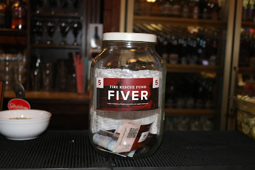
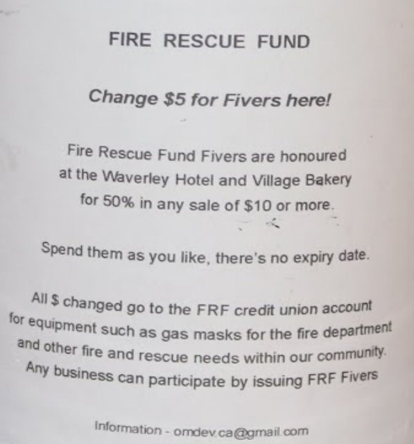

(this ^^ is not a question, just a list of some of the "pros")
It is not from the benevolence of the butcher, the brewer, or the baker that we expect our dinner, but from their regard to their own interest.
What there is in this for business - some features
It only makes sense to have "our own" money as well as the usual $ ("theirs" - money from gov, banks, corporates)
Note "as well as": this is NOT an "instead of" recommendation. All businesses depend on using "their" $ and there is NO proposition of replacing "their" $ with "our" money.
Why use "our" money?
Because
Try the question in reverse - "why would I NOT want to use my own money?"
The only substantial and realistic concern - "I just can’t take the risk / responsibility"
But what is (imagined to be) the nature of the risk, the responsibility that can’t be taken?
So the important question is "how to use my own money well?"
It is critically important NOT to
seigniorage - if not good then bad, clearly bad
Money that is not issued, obviously and with accountability, in the best interests of others is generally seen as self-serving the issuer’s interests. As it is.
Hence Hyman Minsky’s aphorism - "Creating money is easy, anyone can do it; the hard part is getting others to accept it."
Who gets first slice?
Who has first advantage of the created-from-nothing and essentially worthless paper?
"me first, you later" is un-appealing?
the money has to be good not just for me
it must also be good for you and for any who use it
"our" money works in "our" market - anyone can spend in confidence that they’re not passing dodgy paper, wooden nickels
How to make this demonstration?
create your money, give it away and earn it back
Ways to do this
For instance, by a jar or bowl of bills on the counter / widget on check-out page
You enter the store (restaurant, bar, health club ...) and on the counter you see
| a jar of coupons | and a notice |
 |
 |
Are you more (or less) willing to buy?
What outcomes?
say co$500 in co$5 bills are
created - printed, auditable ($10-20 total cost?)
offered in donation, accepted
changed at point of sale
redeemed by customer, perhaps initialled or otherwise validated / endorsed
all co$ bills in the till have been evidently valued
by beneficiary and customer
and so are value for other users
and also value for issuer
co$500 in till can be spent back into the network (staff bonus initially)
time and time again
(not "which would you rather have - $500 or co$500?" - that is not quite the choice offered)
The difference is between business as usual -
$500, $300 or less (who knows?) in your till at the usual pace and making no change and having $500 of your own money in your till and cleared for further circulation a $500 your business can spend, again and again and again and again and again and again and …… (also $500 to cause, and happy customers) (if that matters to you? - it may not make the balance sheet) You might decide to buy something for $500 if it projected a $50 benefit every month. There’s equivalent assessment and calculation to be made here. The real costs and benefits come from - foregoing some hypothetical amount of cash testing how your money is used thinking through - why not have our own money in circulation? why not as much as you can manage? why not? https://tinyurl.com/3xc35huc - this doc printing money - another